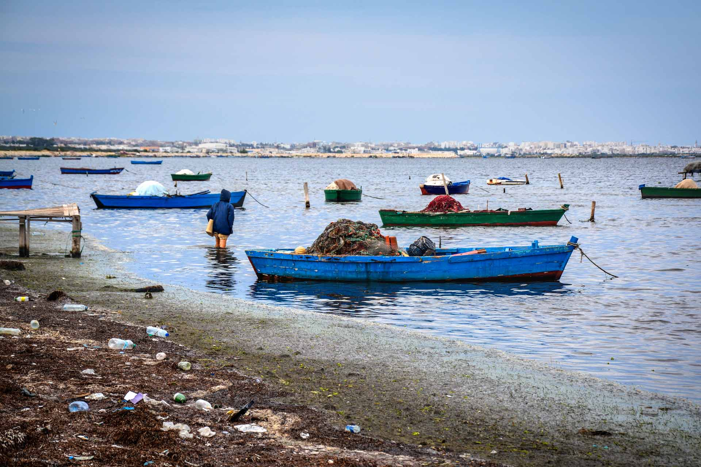
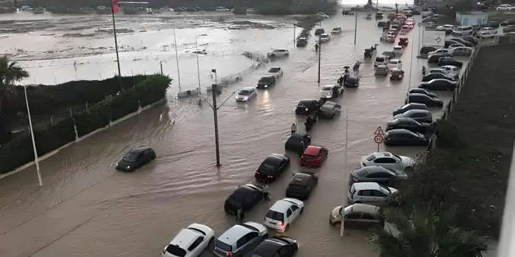
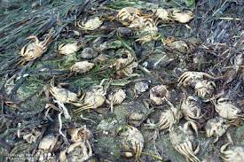
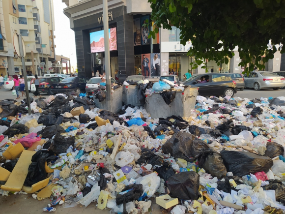
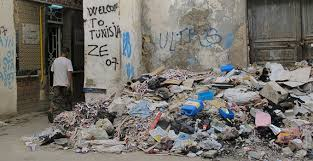
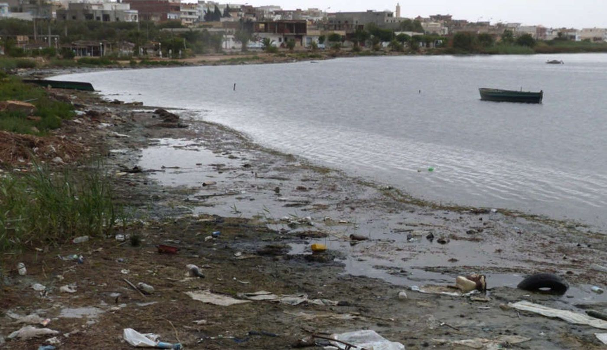

3 crises environnementales. 3 solutions citoyennes. 1 seul objectif : agir maintenant.
De Monastir a toute la Tunisie, la crise environnementale est une urgence qui nous concerne tous.
"Nous sommes la derniere generation a pouvoir agir. Nous sommes aussi la premiere a en subir les consequences."
Ces photos temoignent de l'urgence environnementale a Monastir et en Tunisie. La realite est choquante.

Dechets plastiques et pneus dans les eaux du golfe

242 mm de pluie en 24h - Tempete HARRY

Consequence directe de la pollution industrielle

Cancers x3-4 dans la zone - Crime environnemental

Absence totale de tri selectif

28 plages interdites a la baignade - ete 2025
Ces images reelles temoignent de la crise environnementale a Monastir et en Tunisie. Source : observations terrain & medias locaux.
Rejoignez-nous pour nettoyer les plages de la zone de Monastir. Chaque geste compte.
09:00 - 12:00
RDV devant le Ribat
08:30 - 11:30
Parking Hotel Skanes
09:00 - 13:00
Port de peche
Nous collaborons avec les associations ecologiques les plus actives de la region de Monastir.
Association locale de Monastir engagee dans la sensibilisation environnementale et l'action citoyenne. Organisatrice de campagnes de nettoyage et d'education ecologique.
Association tunisienne dediee a la protection du milieu marin et du littoral. Active dans la conservation marine, le plaidoyer et les actions de terrain en Mediterranee.
Mouvement de jeunes tunisiens pour la justice climatique. Mobilisation citoyenne, marches pour le climat et plaidoyer aupres des decideurs politiques.
Ecole Superieure Privee d'Ingenieurs de Monastir. Partenaire academique qui forme les ambassadeurs environnementaux de demain et soutient les projets etudiants.
ONG nationale de protection de la nature et de l'environnement. Presente a Monastir avec des programmes de recyclage et de sensibilisation communautaire.
Reseau citoyen de nettoyage participatif present dans plusieurs gouvernorats. Organisation de journees de nettoyage des plages, forets et espaces urbains.
Vous etes une association et souhaitez collaborer ?
Contactez-nousAidez-nous a mieux comprendre la situation et a orienter nos actions. Vos retours sont precieux.
Partagez ce site avec vos amis et votre famille. Chaque partage amplifie le mouvement.
Scannez ce QR code pour acceder au site
Exportez les inscriptions et avis collectes au format CSV.